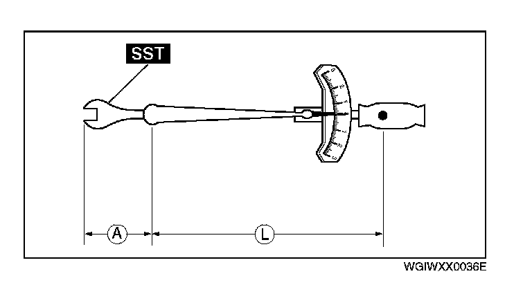
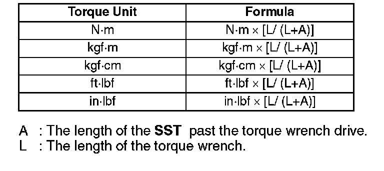

Torque Formulas
Torque Formulas
^ When using a torque wrench-SST or equivalent combination, the written torque must be recalculated due to the extra length that the SST or equivalent adds to the torque wrench. Recalculate the torque by using the following formulas. Choose the formula that applies to you.

A: The length of the SST past the torque wrench drive.
L: The length of the torque wrench.